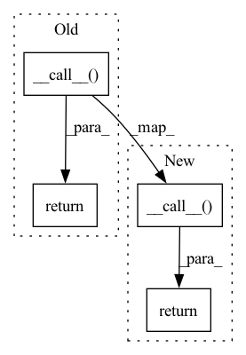

Pattern ID :39334
Before Change
zip(i_supercrop_in_trials, starts, stops, description),
columns=["i_supercrop_in_trial", "i_start_in_trial",
"i_stop_in_trial", "target"])
windows = super().__call__( base_ds.raw, events, metadata=metadata)
return windows
class FixedLengthWindower(Windower):After Change
zip(i_supercrop_in_trials, starts, stops, description),
columns=["i_supercrop_in_trial", "i_start_in_trial",
"i_stop_in_trial", "target"])
return super().__call__( base_ds.raw, events, metadata=metadata)
class FixedLengthWindower(Windower):
In pattern: SUPERPATTERN
Frequency: 4
Non-data size: 4
Instances Fragment ID: 111553110
Project Name: braindecode/braindecode
Commit Name: e475655a46bd9e72b00c05bf09f15f66293933cc
Time: 2020-01-24
Author: gemeinl@informatik.uni-freiburg.de
File Name: braindecode/datautil/windowers.py
M Class Name: EventWindower
N Class Name: EventWindower
M Method Name: __call__(2)
N Method Name: __call__(2)
M Parent Class: Windower
N Parent Class: Windower
M File Name: braindecode/datautil/windowers.py
N File Name: braindecode/datautil/windowers.py
M Start Line: 81
M End Line: 88
N Start Line: 81
N End Line: 91
Before Change
zip(i_supercrop_in_trials, starts, stops),
columns=["i_supercrop_in_trial", "i_start_in_trial",
"i_stop_in_trial"])
return super().__call__( base_ds.raw, events, metadata=metadata)
class FixedLengthWindower(Windower):
After Change
zip(i_supercrop_in_trials, starts, stops, description),
columns=["i_supercrop_in_trial", "i_start_in_trial",
"i_stop_in_trial", "target"])
windows = super().__call__( base_ds.raw, events, metadata=metadata)
return windows
class FixedLengthWindower(Windower): Fragment ID: 111553111
Project Name: braindecode/braindecode
Commit Name: e7a51668baacdb2ab6c2c3e00a5009572a284834
Time: 2020-01-24
Author: gemeinl@informatik.uni-freiburg.de
File Name: braindecode/datautil/windowers.py
M Class Name: EventWindower
N Class Name: EventWindower
M Method Name: __call__(2)
N Method Name: __call__(2)
M Parent Class: Windower
N Parent Class: Windower
M File Name: braindecode/datautil/windowers.py
N File Name: braindecode/datautil/windowers.py
M Start Line: 81
M End Line: 87
N Start Line: 76
N End Line: 88
Before Change
if not self.is_ready_to_build:
self.infer_sizes_from_inputs(inputs)
self.build()
return super(BaseLayer, self).__call__( inputs, *args, **kwargs)
def forward(self, inputs: torch.Tensor, state: torch.Tensor = None) -> Tuple[torch.Tensor, Optional[torch.Tensor]]:
raise NotImplementedError
After Change
if not self.is_ready_to_build:
self.infer_sizes_from_inputs(inputs)
self.build()
call_output = super(BaseLayer, self).__call__( inputs, *args, **kwargs)
if isinstance(call_output, torch.Tensor):
hidden_state = None
elif isinstance(call_output, (List, Tuple)) and len(call_output) > 1:
hidden_state = call_output[1:]
else:
raise ValueError(
"The forward method must return a torch.Tensor (the output of the layer) "
"or a tuple of torch.Tensor (the output of the layer and the hidden state)."
)
self.update_regularization_loss(hidden_state)
return call_output
def forward(self, inputs: torch.Tensor, state: torch.Tensor = None) -> Tuple[torch.Tensor, Optional[torch.Tensor]]:
raise NotImplementedError() Fragment ID: 111553109
Project Name: neurotorch/neurotorch
Commit Name: 792904410e7f1df21fa1887ba3ea3e2d3bd64406
Time: 2022-07-27
Author: 50332514+JeremieGince@users.noreply.github.com
File Name: src/neurotorch/modules/layers.py
M Class Name: BaseLayer
N Class Name: BaseLayer
M Method Name: __call__(2)
N Method Name: __call__(2)
M Parent Class: torch.nn.Module
N Parent Class: torch.nn.Module
M File Name: src/neurotorch/modules/layers.py
N File Name: src/neurotorch/modules/layers.py
M Start Line: 203
M End Line: 208
N Start Line: 206
N End Line: 223
Before Change
if cls.__single_instance:
return cls.__single_instance
single_obj = super().__call__( *args, **kwargs)
cls.__single_instance = single_obj
single_obj.__init__(*args, **kwargs)
return cast("SingletonMetaClass", single_obj)
def _clear(cls) -> None:
Clear the singleton instance.After Change
Create or return the singleton instance.
if not cls.__singleton_instance:
cls.__singleton_instance = cast(
"SingletonMetaClass", super().__call__( *args, **kwargs)
)
return cls.__singleton_instance
def _clear(cls) -> None:
Clear the singleton instance. Fragment ID: 111553112
Project Name: maiot-io/zenml
Commit Name: c44c7f3cac8eec6e3d3a7cbe21d336de05dbe1e2
Time: 2022-01-29
Author: michael.schuster.ffb@googlemail.com
File Name: src/zenml/utils/singleton.py
M Class Name: SingletonMetaClass
N Class Name: SingletonMetaClass
M Method Name: __call__(1)
N Method Name: __call__(1)
M Parent Class: type
N Parent Class: type
M File Name: src/zenml/utils/singleton.py
N File Name: src/zenml/utils/singleton.py
M Start Line: 44
M End Line: 49
N Start Line: 46
N End Line: 51